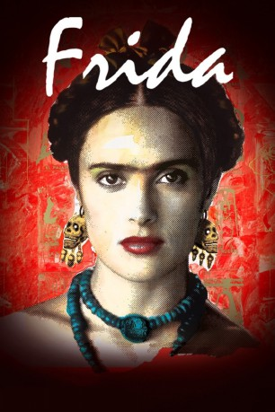

#1865 Frida
Auszeichnungen: 2 Oscars gewonnen für 4 Oscars nominiert 1 GoldenGlobes gewonnen 1 BAFTA-Awards gewonnen
 
 IMDB-Wertung: 7.4 / 10
IMDB-Wertung: 7.4 / 10  Metascore: 61
Metascore: 61 
Mexiko, Anfang des 20. Jahrhunderts: Die junge, lebenslustige Frida Kahlo genießt ihr Teenagerdasein in vollen Zügen – bis ein tragischer Unfall das ungestüme Mädchen ans Bett fesselt. Getrieben von ihrem unerschütterlichen Lebensmut fängt Frida an zu malen – in ihren gefühlsgewaltigen Bildern gibt sie ihren Träumen, Sehnsüchten und den nicht enden wollenden Schmerzen Ausdruck. Wieder genesen, wird der berühmte Maler Diego Rivera auf die bildschöne Mexikanerin aufmerksam – die beiden verlieben sich ineinander, heiraten und leben eine der aufregendsten, verrücktesten Liebesgeschichten des 20. Jahrhunderts.
Jahr: 2002
Dauer: 123 Minuten
FSK: 12
Land: USA Studio: MiramaxTonspuren: DTS - ,
Untertitel: Deutsch,
Auflösung: 1080p (1920x1040) Größe: 9646 MB
Genre: Biographie, Drama, Liebe
Regisseur:  Julie Taymor
Julie Taymor
Drehbuch: Hayden Herrera, Clancy Sigal, Diane Lake, Gregory Nava, Anna Thomas
Soundtrack: Elliot Goldenthal
Darsteller:
 Salma Hayek als Frida Kahlo
Salma Hayek als Frida Kahlo Mía Maestro als Cristina Kahlo
Mía Maestro als Cristina Kahlo Alfred Molina als Diego Rivera
Alfred Molina als Diego Rivera Antonio Banderas als David Alfaro Siqueiros
Antonio Banderas als David Alfaro Siqueiros Valeria Golino als Lupe Marín
Valeria Golino als Lupe Marín Diego Luna als Alejandro 'Alex'
Diego Luna als Alejandro 'Alex' Edward Norton als Nelson Rockefeller
Edward Norton als Nelson Rockefeller Saffron Burrows als Gracie
Saffron Burrows als Gracie Roger Rees als Guillermo Kahlo
Roger Rees als Guillermo Kahlo Ashley Judd als Tina Modotti
Ashley Judd als Tina Modotti Roberto Medina als Dr. Farril
Roberto Medina als Dr. Farril- Lila Downs als Tango Singer
- Ehécatl Chávez als Drunk Young Man
- Elliot Goldenthal als Newsreel Reporter
- Patricia Reyes Spíndola als Matilde Kahlo
- Didi Conn als Waitress
 Geoffrey Rush als Leon Trotsky
Geoffrey Rush als Leon Trotsky- Margarita Sanz als Natalia Trotskaya
- Omar Chagall als André Breton
 Benjamín Benítez als Carlos , uncredited
Benjamín Benítez als Carlos , uncredited- Andrés Montiel als Cachucha , uncredited
- Eszter Zakariás als Patron , uncredited
- Antonio Zavala Kugler als Mercader, Trotsky's Assassin , uncredited
- Alejandro Usigli als Professor
- Loló Navarro als Nanny
- Fermín Martínez als Painter on Bus
- Amelia Zapata als Maid
- Martha Claudia Moreno als Woman at Wedding
- Maria Ines Pintado als Woman at Wedding
- Aida López als Lupe's Maid
- Ivana Sejenovich als Chapingo Chapel Model
- Diego Espinosa als Pulquería Singer
- Lucia Bravo als Auditorium Model
- Julian Sedgwick als New York Reporter
- William Raymond als New York Doctor
- Jorge Guerrero als Priest at Funeral
- Mary Luz Palacio als Isolda
- Anthony Alvarez als Trotsky's Armed Sentry
- Enoc Leaño als Trotsky's Armed Sentry
- Karine Plantadit-Bageot als Paris Chanteuse
- Chavela Vargas als Death 'La Pelona'
- Jorge Zepeda als Detective
- Claudia Frías als Maid , uncredited
- Felipe Fulop als Jean van Heijenoort , uncredited
- Mauricio Osorio als Corona , uncredited
- Jorge Valdés García als Doctor in Red Cross Hospital , uncredited
Datei: X:\2002\Frida (2002, FSK12, 1920x1040).mkv seit 28.08.2015
Festplatte: HD 1996-2002
 Es gibt insgesamt 93 Filme in der Gruppe '2002'
Es gibt insgesamt 93 Filme in der Gruppe '2002'